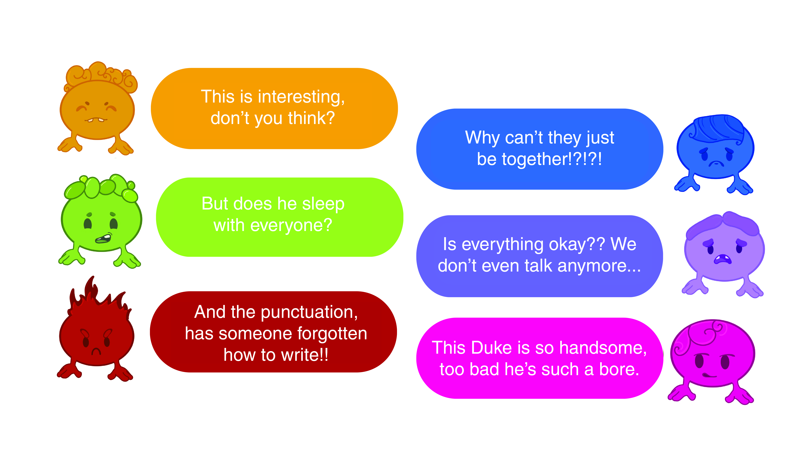
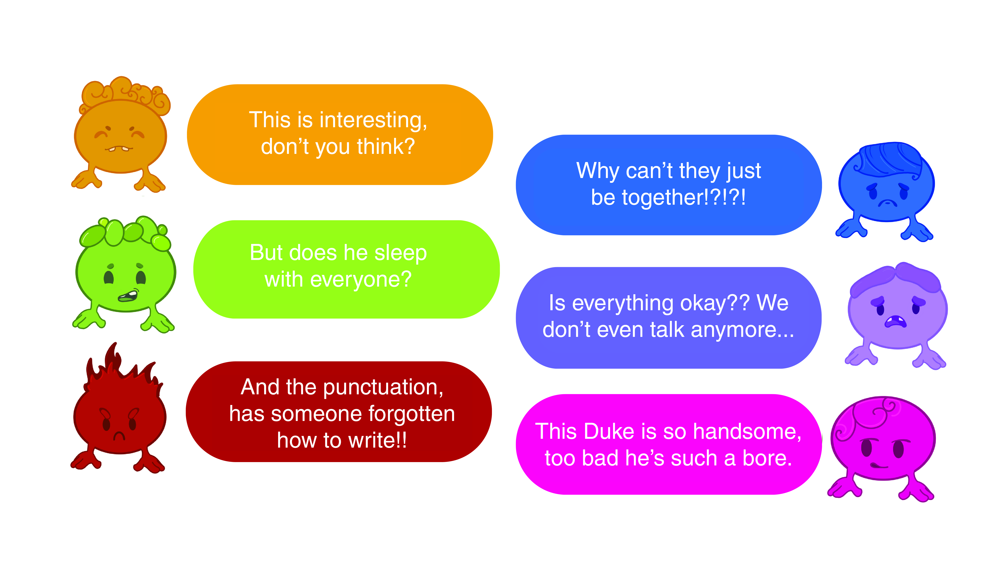
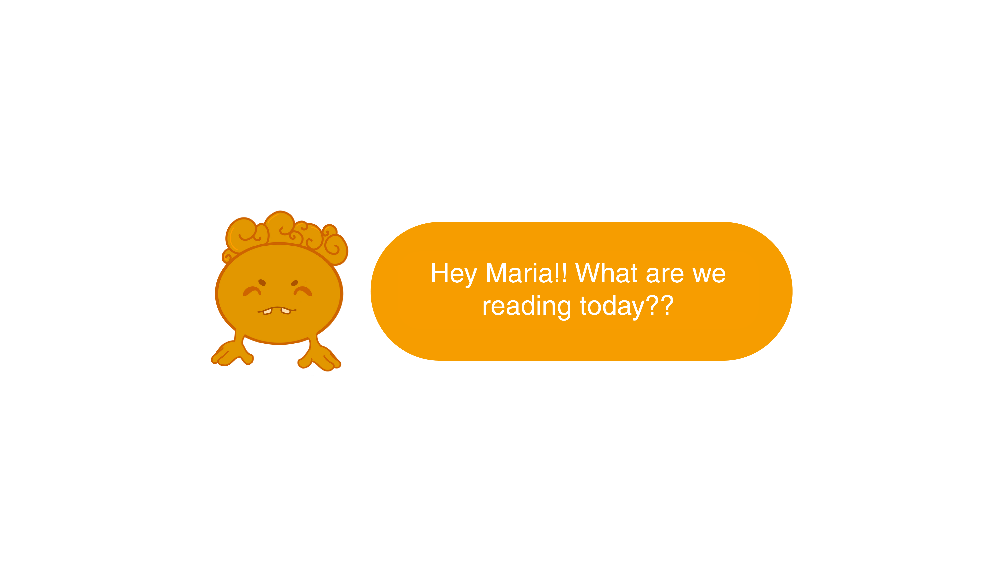
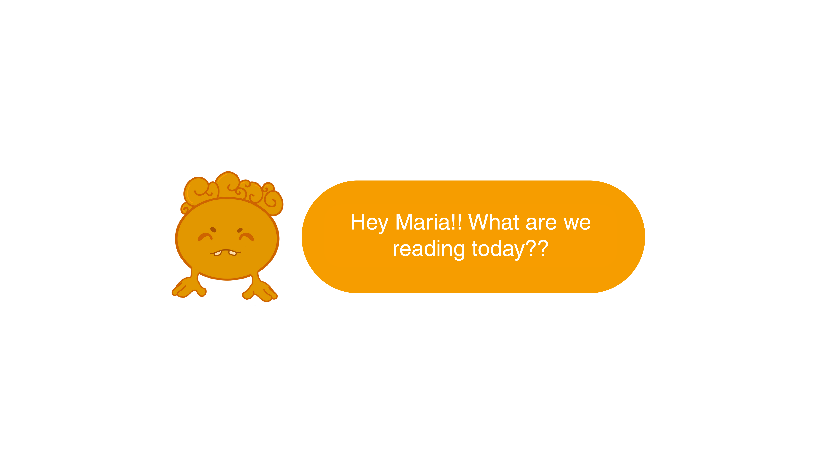

BUDDY
Our app, BUDDY, the Virtual Friend, transforms reading into a social and enjoyable experience. It accompanies you on any page if you wish, offering comments, explanations, and answers to questions. If you pause your reading, it sends encouraging messages with spoilers or even just checks in on you. The goal is to enrich the reading experience, making it interactive and personalized, promoting the habit of reading, and turning this activity into a more communicative one.

 



 
